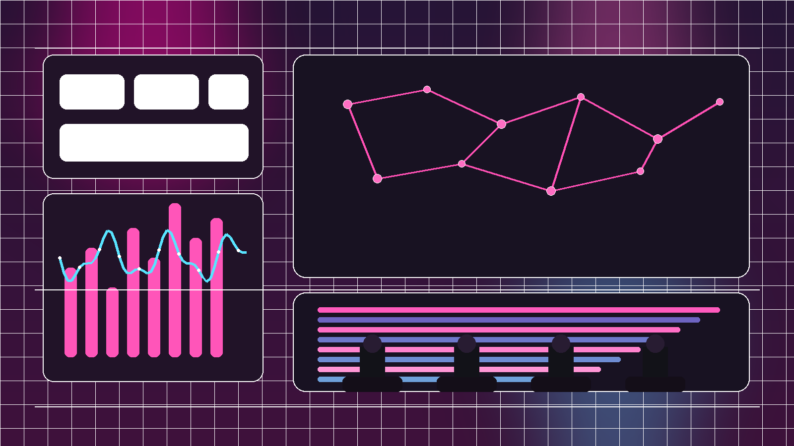

Deutsche Telekom's 546% AI Usage Surge: A 2026 Business Case for AI Adoption in Telecom
Deutsche Telekom's July 2026 rollout shows AI gets commercially serious when employee tooling, customer care, and network operations are redesigned together instead of optimized in silos.
Read article →